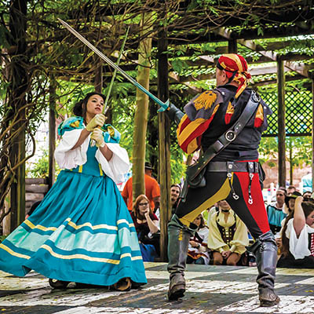
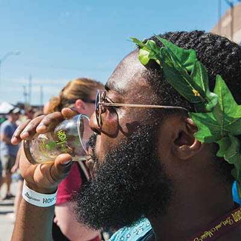
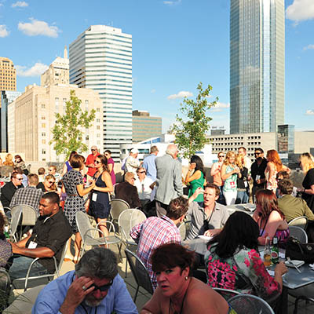
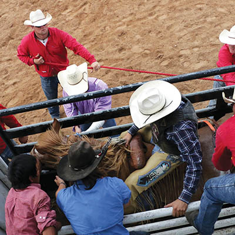
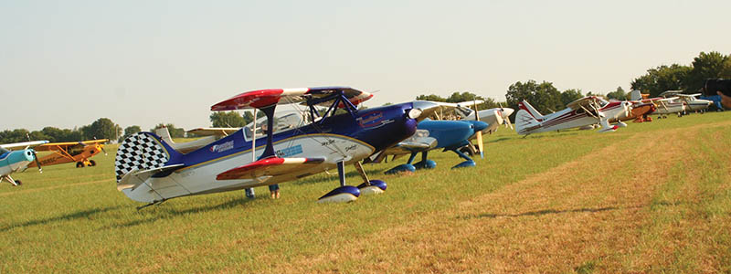
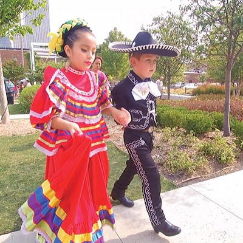
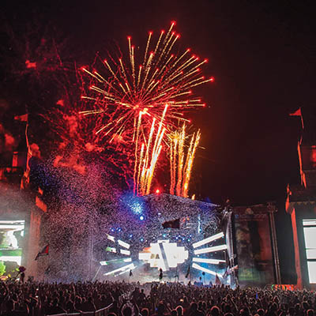
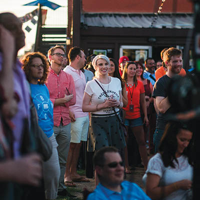
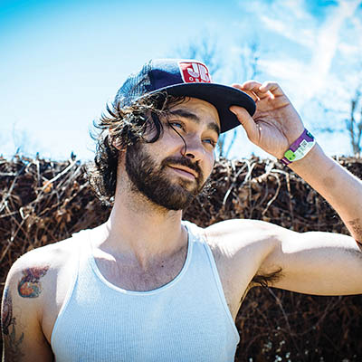

Festival pass
Your guide to Oklahoma festivals in the coming months

Hark! Festival season is upon us. Depending on your interests, that might mean hula-hooping to ambient music in the great outdoors or heading inside to play vintage arcade games in your finest cosplay wear. Whatever you're into, Oklahoma probably has a festival for it. This year's guide includes events celebrating everything from anime to yoga, diversity to local art, and craft beer to comedy. Most of the events are in or near Tulsa, tough a few will take you farther away. (We promise they're worth it.) Happy festing.
Oklahoma Renaissance Festival
Saturdays and Sundays throughout May | The Castle of Muskogee, Muskogee | $5.95-$59.95 | okcastle.com
Travel back in time to 16th Century England at The Castle of Muskogee’s 21st annual Renaissance Festival. Over 600 costumed stage and street performers, merchants and artisans will bring the village of Castleton to life.
International Jazz Fest
Fri., May 6 | Guthrie Green | guthriegreen.com
Presented buy TulsaJazz.com and SpiritBank, this festival (which takes place during the upcoming First Friday Art Crawl) is an International Jazz Day-sanctioned event, and Tulsa’s first official participation in the holiday since its inception in 2012. The festival will feature The Cynthia Simmons Quintet, R.701: a 15 member jazz vocal group accompanied by the Claremore High School Jazz Band, Tulsa Latin Style, a dance group from Tiberias, Israel, and more.
Rooster Days
Thurs., May 12 through Sat., May 14 | Central Park, Broken Arrow
Admission is free, ride passes are available at $25-$45 | roosterdays.com
Now in its 85th year, Broken Arrow’s Rooster Days is Oklahoma’s longest-running festival. Carnival rides, great food, live entertainment, the Miss Rooster Days pageant, and the Rooster Days Parade bring families back year after year.
SUPER ULTRA MEGA NERDRAGEAPALOOZA EXTRAVAGANZA
Sat., May 14, 9 p.m. | IDL Ballroom | $15 in advance, $20 at the door | idlballroom.com
Famed photographer David Lackey, IDL’s Tom Green, and Christopher Rowe have teamed up for the ultimate nerdout party, hosted by national cosplayer It’s Raining Neon and featuring vintage arcade games, cosplay contests, themed cocktails, and music by DJ abSRD and Mysti Jynx. Judged by cosplayers Sinfonie, Kiki and Hikaruhime, the costume contest will award trophies, movie tickets, a PS4, tattoo gift certificates, and signed artwork to the best and worst costumes; other prizes will also be awarded throughout the night, courtesy of GameStop.
 Mayfest
Mayfest
Thurs., May 19 through Sun., May 22 | Deco District | tulsamayfest.org
Over 100 artists display and sell their work at Mayfest, which also boasts four stages of live music, tons of food, and activities for kids. Headlining musicians include Michael Glabicki of Rusted Root, William Clark Green, and Band of Heathens. Dozens of local acts will also perform, including klondike5, Sam & The Stylees, Steve Liddell, Johnny Badseed and the Rotten Apples, Eric Himan, Brujoroots, and Count Tutu.
(1).jpg) Blue Dome Arts Festival
Blue Dome Arts Festival
Fri., May 20 through Sun., May 22 | Blue Dome District | bluedomearts.org
The “Locals Only” answer to Mayfest features around 250 local visual artists. From paintings, carvings, and photographs to apparel, glass work and artcars, local talent is on full display. Blue Dome’s stage (which is always surrounded by some of T-Town’s best food trucks) will feature over two-dozen performances, including Dustin Pittsley Band, Zach Short Group, Adrienne Gilley, and FM Pilots.
Habit Mural Festival
Fri., May 20 through Sun., May 22 | East Village District, Brady Arts District | habitfestival.com
Over 15 street artists descend upon downtown with a mission to enhance our city and inspire cultural growth. The hub of the festival will be a 49,000 square foot warehouse in the East Village at 856 E. 1st St., and there will also be a satellite arm of the festival (a collaboration with The Hop Jam) in the Brady Arts District at 209 N. Main St.
The Hop Jam
Sun., May 22 | Brady Arts District | Concert is free, music VIP is $65, unlimited craft beer tickets are $35-$150 | thehopjam.com
The Hanson brothers’ beer and music festival has blown up in its third year, featuring over 100 beers from 60 breweries, including 15 from Oklahoma, and breweries from 20 states and 10 countries participating. No, unfortunately Hanson isn’t going to play this year, but they’re making up for it with a lineup that includes Edward Sharpe and the Magnetic Zeros, Albert Hammond Jr., X Ambassadors, John Moreland, Chase Kerby + The Villains, and the winner of Hop Jam’s annual opening band contest.
Tulsa International Balloon Festival
Thurs., May 26 through Mon., May 30 | Tulsa Downtown Airpark | $5-$10 | tulsaibf.com
A replacement for Gatesway Balloon Festival, which ran for 20 years, Tulsa IBF is Oklahoma’s largest ballooning festival and one of the largest in the country. The festival also includes six stages of live music, and a huge carnival with rides, games and more.
Rocklahoma
Fri., May 27 through Sun., May 29 | Catch the Fever Festival Grounds, Pryor | Tickets start at $162, camping passes start at $100 | Rocklahoma.com
The 10th anniversary of the state’s hardest rocking festival will feature performances from Rob Zombie, Scorpions, 3 Doors Down, Disturbed, Megadeth, The Sword, Sebastian Bach, and many more.
Route 66 PatriotFest
Sat., May 28 | Webster High School, Route 66 | route66patriotfest.com
Route 66 PatriotFest features a classic car and motorcycle show, military exhibits, live music, arts, crafts, and activities for kids. Starting at 8 a.m., classic cars will cruise through Tulsa on the Mother Road, starting at the east Route 66 Gateway near East Central High School and ending at the west gateway in the historic Red Fork area of West Tulsa.
Real Okie Craft Beer Festival
Friday, June 3 | Honor Heights Park, Muskogee | $25-$30 | friendsofhonorheightspark.org
True to its name, Real Okie is a beer festival featuring only Oklahoma breweries. In addition to the twelve breweries on site, the festival features food and live entertainment.
Tallgrass Music Festival
Fri., June 3 and Sat., June 4 | Skiatook Sports Complex, Skiatook | $15-$20 | tallgrassmusicfestival.com
Skiatook’s annual bluegrass festival will feature performances from Russell Moore & IIIrd Tyme Out, Grass Crack, The Farm Hands, Wood & Wire, Southbound Mule, and Blue Pearl. Each night ends with a Band Scramble featuring musicians from several bands jamming together.
Tulsa Pride Festival & Parade
Sat., June 4 and Sun., June 5 | Dennis R. Neill Equality Center, Centennial Park | okeq.org
Celebrate Tulsa’s LGBTQ community in Oklahoma’s longest-running Pride celebration. The Parade starts at 6 p.m. at 13th and Boston and ends at the Festival outside Dennis R. Neill Equality Center, where dozens of organizations will have exhibits, and an outdoor stage will feature folk, rock, DJs and drag performances. The festival runs from noon to 10 p.m. On Sunday, OKEQ holds Picnic in the Park, a family-friendly picnic under the skyline at Centennial Park.
deadCENTER Film Festival
Wed., June 8 through Sun., June 12 | Downtown Oklahoma City | All-access passes: $150, individual event tickets also available | deadcenterfilm.org
Oklahoma’s largest film festival features over 100 films of all genres selected from thousands of entries. Last year 30,000 people attended the festival’s screenings.
 Tulsa Tough
Tulsa Tough
Fri., June 10 through Sun., June 12 | Fri.: Blue Dome District, Sat.: Brady Arts District, Sun.: River Parks | tulsatough.com
Go back to 2005 Tulsa and tell someone that in the future, the craziest weekend every year will be a series of bicycle races. You may have a hard time convincing them, but time has proven it to be true. Tulsa loves cycling, especially when it gives us a reason to wear rubber baby masks and completely ruin the lawns of all the houses near 13th and Indian Ave.
Wingapalooza
Sat., June 11 | BOK Center | $25-$75 | bokcenter.com/event/wingapalooza
Dozens of local restaurants toss up their variations on chicken wings hoping to be named the best cluckin’ wings in town.
 OK Mozart International Festival – Opus 32
OK Mozart International Festival – Opus 32
Sat., June 11 through Sat., June 18 | Bartlesville Community Center, Woolaroc, and other venues in Bartlesville | Prices vary per performance | okmozart.com
The 32nd OK Mozart festival is a week-long celebration of classical music and more, with many performances featuring ensembles of varying sizes, including Tulsa Symphony, Bartlesville Symphony, Signature Symphony, jazz and soul singer Catherine Russell with quintet, pop-classical crossover trio Simply Three, Miró String Quartet and many more.
Mid West Hesh Fest Presents: FreakTulsa
Fri., June 17 through Sun., June 19 | Downtown Lounge | $25-$100 | facebook.com/FreakTulsa
A weekend of heavy doom awaits at Downtown Lounge, with nearly 30 dark rock and psychedelic bands, including Smoke Offering, Senior Fellows, Silver Screen Monsters, Violent Wednesday, Skeleton Farm, Blunt Splitter, Psychotic Reaction, Brother Gruesome, Sun Vow, and more.
Juneteenth
Fri., June 17 through Sun, June 19
Guthrie Green; Greenwood and Archer; Jazz Hall of Fame | guthriegreen.com
The beloved music celebration will take place across three days and venues, with each day focusing on a different genre of music. Friday focuses on Jazz and Blues with a tribute to the late Wayman Tisdale at Guthrie Green, Saturday will feature an R&B/Hip Hop-centric street party at Archer and Greenwood, and Sunday’s event at the Jazz Hall of Fame will feature Gospel music.
G Fest
Thurs., June 16 through Sat., June 18
Love-Hatbox Sports Complex, Muskogee | $44-$379 | gfestmuskogee.com
The inaugural G Fest will feature performances from Kacey Musgraves, The Avett Brothers, Old Crow Medicine Show, Turnpike Troubadours, Robert Randolph & The Family Band, John Fullbright, Uncle Lucius, Red Dirt Rangers, Desi & Cody, Brujoroots, Junior Markham, Levi Parham, Jacob Tovar and the Saddle Tramps, Green Corn Rebellion, Travis Linville, and many more.
.jpg)
Old Crow Medicine Show
G Fest 101
Four questions with event director Jim Blair
The Tulsa Voice: Can you tell us a little about G Fest's origin story?
Jim Blair: The concept was tossed around Muskogee for a few years, but never got traction until the City started exploring the re-use of Hatbox Field, which is the location of an old airport. They’d established a successful waterpark and sports complex on the property, but there was still a ton of room. They realized they’d get more bang for their buck if they did something they could host festivals at. The Hall of Fame has had to rethink how to maintain our sustainability, which is hard to do with museums and inductions, so we saw Hatbox Field as an opportunity, too. The establishment of the City of Muskogee Foundation helped, too. They’re funding a lot of good things. They’ve given away $38 million dollars for various projects. The festivals that are sustainable are the ones with serious backing. And, so far, we’ve sold tickets in 24 states and in the UK.
TTV: What is it about Muskogee that makes it such an ideal festival town?
JB: None of the festivals that go on here are necessarily music festivals. The Azalea festival goes back to the 1940s, when those plants were planted. The Castle’s Renaissance Festival attracts people from all over the country. Because of Muskogee’s size, we’re known for our specific festivals. We see G Fest as the new branding for Muskogee. That’s why we kept the name simple. Hipsters call Muskogee “the G” or “the Gee,” and if you don’t name the festival that, your patrons will rename it for you.
.jpg) TTV: The recent death of Merle Haggard was obviously a huge loss to the music community.
TTV: The recent death of Merle Haggard was obviously a huge loss to the music community.
G Fest had him booked as the headliner. How has this last minute scramble affected the late stages of planning the festival?
JB: It was shocking. My first thought was not what it does to the festival, to be honest. Merle was the biggest of 82 acts we have scheduled, but my first thought was for his family and fans. We were one of a number of dates he had scheduled. We didn’t scramble—pretty quick we figured out what we were going to do. Kacey Musgraves will replace him. Well, nobody can replace Merle, but she’s a great compliment to the other music we have scheduled. We’ll do everything in honor of Merle, which includes naming a street and launching a campaign for a memorial bench in Muskogee.
.jpg) TTV: You’ve got some pretty big names on the lineup. Anyone in particular that you’re most excited to see?
TTV: You’ve got some pretty big names on the lineup. Anyone in particular that you’re most excited to see?
JB: I don’t want to hurt feelings here, but two of the acts I’m really looking forward to seeing and meeting are Marty Stewart and Robert Randolph. But I’m excited about all of them. The Avett Brothers—they’re the biggest band to have ever played in Muskogee, and we’ve never had a stage this big in Muskogee.
Mvskoke Nation (Creek) Festival
Thurs., June 23 through Sun., June 26 | Claude Cox Omniplex, Okmulgee | creekfestival.com
Now in its 41st year, the Mvskoke Nation Festival celebrates the culture of Muscogee (Creek) Nation and features arts & crafts, food, a rodeo, sports and games tournaments, music and more. This year’s music lineup hasn’t been announced yet, but keep an eye out for some greatness. Last year’s headliners were The Commodores, Kool & The Gang, and A Tribe Called Red.
Folds of Honor FreedomFest
Mon., July 4
River West Festival Park, Veterans Park | riverparks.org/freedomfest
Celebrate our great nation with a picnic, live local music, and one of the biggest fireworks displays in the country.
 Woody Guthrie Folk Festival
Woody Guthrie Folk Festival
Wed., July 13 through Sun., July 17
Pastures of Plenty, Okemah | $30-$75 | woodyfest.com
Woody Guthrie Folk Festival is held on the weekend nearest Woody Guthrie’s birthday (July 14) in his hometown of Okemah. The lineup includes John Fullbright, David Amram, Samantha Crain, Michael Fracasso, Ellis Paul, Kalyn Fay, Jared Tyler, Peter Case, Wink Burcham, Ali Harter, John Calvin Abney, and more.
Tokyo in Tulsa
Fri., July 15 through Sun., July 17 | Cox Business Center, DoubleTree Downtown | tokyointulsa.com
Tokyo in Tulsa is Oklahoma’s largest celebration of anime, cosplay, and Japanese pop culture, with guest speakers, panels, exhibitors, live music and entertainment, and gaming of all varieties. The festival’s theme this year is “Worlds Collide: Mecha vs. Pirates,” and will feature appearances by Italian cosplay superstar NadiaSK, “hardcore” cosplay group Mythos Creations, anime and gaming voice actress Rachael Messer, actress/dancer/fight choreographer Viviane Wolf, writer/actor J. Michael Tatum, and gothy visualkei band MeteoroiD, among others.

Will Rogers & Wiley Post Fly-In
Sat., Aug. 13 | Will Rogers Birthplace Ranch, Oologah | willrogers.com
Watch more than 100 small planes fly-in and land on the 2,000-ft. grass airstrip on Will Rogers’s former home. Chat with pilots, listen to a Cherokee storyteller, take a free tour of the Will Rogers Birthplace and more.
 Wild Brew
Wild Brew
Sat., Aug. 27 | Cox Business Center | $45-$165 | wildbrew.org
Never has funding bird conservation efforts tasted so good. This year, Wild Brew, which raises funds for the Sutton Avian Research Center, promises beer and food from more breweries and restaurants than ever before.
Festival Americas
Sat., Aug 27 | Guthrie Green | guthriegreen.com
La Semana and Guthrie Green present a celebration of Mexican culture and the rich diversity within Tulsa’s Latino community. The family-friendly festival will feature live music and dance, Luchadores, a street market, and plenty of food from around the Americas.
Backwoods Music & Camping Festival
Thurs., Sept. 1 through Mon., Sept. 5 | Tatanka Ranch, Stroud | backwoodsmusicfestival.com
In its second year since upsizing and moving to Stroud, Backwoods continues in its tradition of electronic and jam-filled lineups. This year will feature Nero, Big Gigantic, moe., Nahk and Medicine for the People, Chet Porter, Groovement, Zoogma, Helen Kelter Skelter, and more.
PostOak Wine & Jazz Festival
Fri., Sept. 2 through Sun., Sept. 4 | PostOak Lodge & Retreat | $10 | postoaklodge.com
Not much information has been released yet on the second year of this festival, but if wine, jazz, and those lovely rolling Oklahoma hills are things you enjoy, look no further.
Claremore Bluegrass & Chili Festival
Thurs., Sept. 8 through Sat., Sept. 10 | Claremore Expo Center, Claremore | bluegrasschilifest.com
Claremore’s Bluegrass & Chili Festival is the perfect place to bid farewell to summer and welcome autumn. An always-great lineup of bluegrass musicians from around the country, tasting chili from competitors in one of the biggest chili cook-offs around, and just maybe that first hint of evening chill in the air.
Blue Whale Comedy Festival
Thurs., Sept. 8 through Sun., Sept. 11 | Various locations in Downtown Tulsa
Weekend passes start at $85, individual show tickets also available
bluewhalecomedyfestival.com
Blue Whale Comedy Festival just announced its first round of performers for the third annual festival. The oh so weird and wonderful Eric Andre will headline, along with Fortune Feimster, DJ Douggpound, and many more to be announced.
Mother Road Folk Revival Weekend
Thurs., Sept. 8 through Sun., Sept. 11
Circle Cinema, Woody Guthrie Center, BOK Center, Cain’s Ballroom
Tickets prices vary per event | bokcenter.com/mrr
Celebrate Route 66 with a weekend of events honoring her, including a Folk Film Series at Circle Cinema, discussions on Woody Guthrie’s late life in Greenwich Village, a concert at BOK Center featuring Jason Isbell, Shakey Graves, and Lucero, a Gospel Brunch at Cain’s, and more.
Tulsa Greek Festival
Thurs., Sept. 15 through Sat., Sept. 17 | Holy Trinity Greek Orthodox Church | tulsagreekfestival.com
Tulsa’s oldest ethnic festival features a menu of home-cooked Greek delicacies, dancing, gifts, jewelry, and more.
Scotfest
Fri., Sept. 16 through Sun., Sept. 18 | River West Festival Park | okscotfest.com
Strap on your tartan and enjoy the food and drink, music and entertainment, and of course, the highland games of Scotland. There’s something for everyone, whether you own a kilt or not.
 I AM Yoga, Art + Music Festival
I AM Yoga, Art + Music Festival
Fri., Sept. 16 through Sun., Sept. 18 | Veterans Park
Free entrance, tickets are required for some classes and workshops
iamyogafestival.com
I AM features yoga classes and workshops for all levels and interests taught by locals and yogis from around the country. The festival also features art and performances by local musicians.
Fourth Annual Medicine Stone Festival
Thurs., Sept. 22 through Sat., Sept. 24 | Diamondhead Resort, Tahlequah
Tickets on sale June 1 at 10 a.m. | medicinestoneok.com
Red Dirt connoisseurs rejoice: Tahlequah’s three-day Medicine Stone Festival brings together the best Red Dirt acts from Oklahoma and beyond. This year’s line-up has not yet been announced, but last year’s festival featured everyone from Jason Boland & The Stragglers and Turnpike Troubadours to Billy Joe Shaver and Randy Crouch.
XPO Gaming Convention
Fri., Sept. 23 through Sun., Sept. 25 | Cox Business Center | $30-$75 | xpotulsa.com
Get a first look at new gaming technology, hear panels and speakers from inside the industry, and play plenty of games at this inaugural convention. There will be a film festival, cosplay contests, a retro gaming lounge, a live $10,000 Rocket League tournament, and more.
Oklahoma International Bluegrass Festival
Thurs., Sept. 29 through Sat., Oct. 1 | Cottonwood Flats, Guthrie | $15-$70 | oibf.com
The brainchild of three-time National Fiddle Champion Byron Berline, OIBF is now in its 21st year. This year’s lineup hasn’t been released, but expect plenty of world-class pickin’.
.jpg)
.jpg)